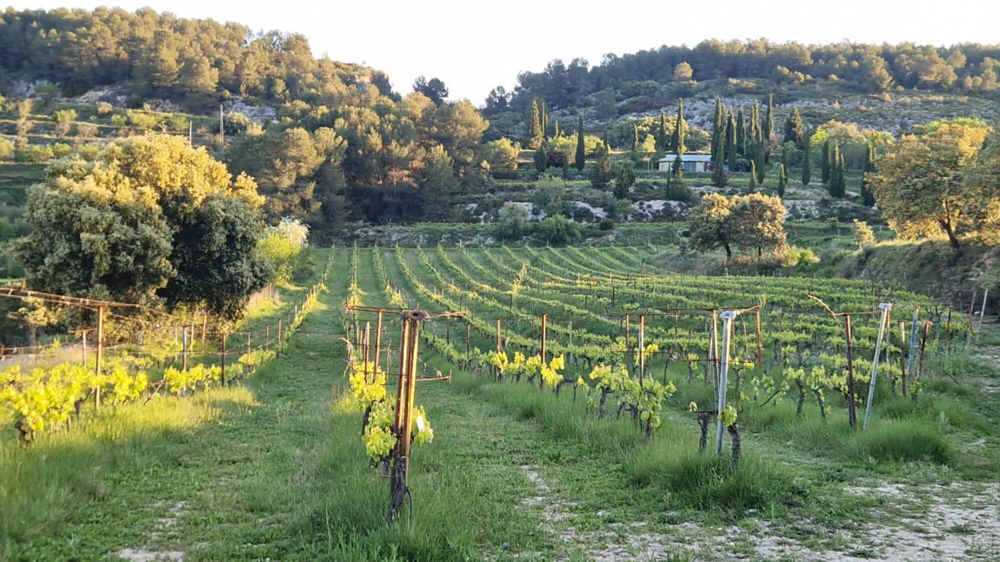
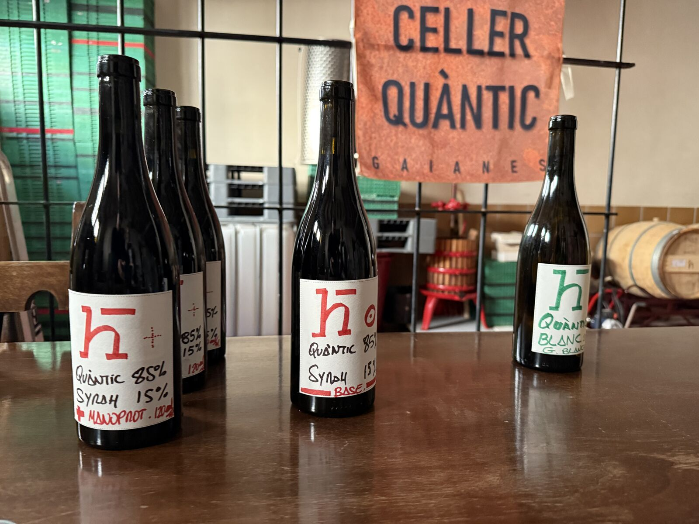
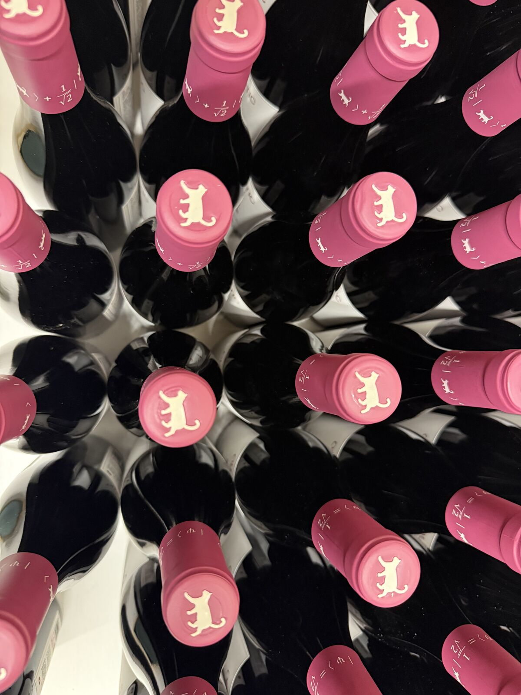

Quàntic · White
Lise Meitner
2025
White fruit and peach on the nose, fine minerality, and a lovely tension and freshness on the palate.

Gaianes · Comunitat Valenciana
Wines from a restored 18th‑century cellar in the mountains of inland Alicante — made by three quantum physicists and their friends.
The celler
In Gaianes, at the foot of the Benicadell, stands a building where wine and olive oil were made for more than two centuries. We restored it, and today we make wine there again, the artisanal way: grapes picked by hand in our own vineyards, red wines fermented in the original century‑old concrete tanks, everything under the old wooden beams.
It began with two physicists, Juan Fuster and José Ignacio Latorre, who met at a physics school in 2002 and decided, among more serious conclusions, to make wine together. Family joined, a small plot was planted, the vineyard grew faster than the circle of friends who could drink it, and Celler Quàntic de Gaianes became a professional winery. Artur Ekert joined, “crazy” enough to take part, and Jordi Miguel brought his love of craftsmanship.
“The vineyard is a laboratory of life — and a laboratory of science too.”— Juan Fuster

The land
Our vines grow in Gaianes, Agres and Cocentaina, in the mountainous interior of the Comunitat Valenciana — among holm oaks, pines and cypresses, beneath Mariola, Benicadell and Montcabrer, under the Mediterranean light.
At harvest, days reach 24–29 °C while nights in Agres fall to 9–12 °C. The cool nights let the vines rest and keep the fruit fresh and aromatic.
Alongside our own plots we work with micro‑vineyards: small parcels planted over generations with a little Garnacha, a little Monastrell, a little Cabernet. Bringing abandoned vines back into cultivation keeps the landscape alive — and, below Montcabrer, it also makes a natural firebreak.
The wines
Tasted in November 2026 by the panel of Verema, one of Spain’s leading wine guides: all three scored above 90.
Quàntic · White
2025
White fruit and peach on the nose, fine minerality, and a lovely tension and freshness on the palate.
Quàntic · Red
2022–2023
Peppery and spicy, very round and accessible. Give it air — it opens beautifully in a decanter.
Our special red
2024–2025
A complex, very fresh nose and crisp, vivid fruit. Silky tannins and a long, persistent finish.
Tasting notes: ours, October 2026. Scores: Verema, November 2026. Order from our shop or write to us.


The label
Every bottle carries — “h‑bar”, the reduced Planck constant, one of the most fundamental constants in physics. Friends and colleagues simply call ours the h‑bar wine. The symbol comes in three designs: a clean, modern one on Lise Meitner and Max Born; one brushed in Japanese calligraphy for El·lipse; and a bespoke version scribbled with equations.
Schrödinger’s cat — our seal of approval. Nearly a century after it was born, the cat has been resurrected on our capsules. It seems to approve of the molecules inside, though with this cat one can never be entirely sure. Each bottle keeps its secret until it is opened: the measurement, and the final verdict, are yours.
Our wines have been enjoyed by Nobel laureates Alain Aspect, Barry Barish, Sheldon Glashow and Richard J. Roberts — and, allegedly, by Schrödinger’s cat while it was still alive.
The people
Experimental particle physicist. Runs the day‑to‑day of the winery.
“Quàntic must be an excellent wine not only in taste, but also in the social values it represents.”
Researcher in quantum computing, with a deep connection to the land.
“The beauty of wine lies in its complexity, just like physics.”
Physicist specialising in quantum cryptography.
“Making wine is a way of understanding nature… and challenging it.”
Wine lover and advocate of artisanal craftsmanship.
“It contains the light of our sun and the flavour of our land.”

Visit us
Two wines from current production, one white and one red. About 1 hour.
Two wines in production, plus a bottle of white and a bottle of red uncorked. About 1½ hours.
As above, with a visit to the vineyards in your own vehicle. About 2½ hours.
Visits by appointment — please get in touch before you come.
Write or call
cellerquantic@gmail.com
+34 604 423 250
Orders, visits and distribution enquiries welcome.